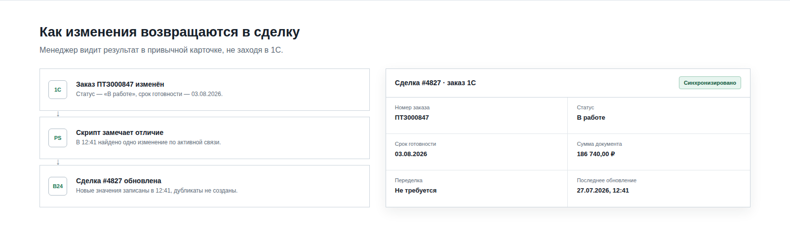

Полная версия
Кейс в Word
Развёрнутый материал: бизнес-контекст, задача, архитектура, сценарий, тестирование и эффект.
Скачать WordКейс интеграции · СтеклоЦентр.ПТЗ
Одна сделка Bitrix24 — один производственный заказ 1С. Двусторонний обмен без публикации базы и дублей.

Два готовых формата
Документы размещены внутри страницы и не зависят от внешнего облачного диска.
Полная версия
Развёрнутый материал: бизнес-контекст, задача, архитектура, сценарий, тестирование и эффект.
Скачать WordДля показа
11 слайдов для встречи или отправки клиенту: от исходной задачи до подтверждённого результата.
Скачать PowerPoint